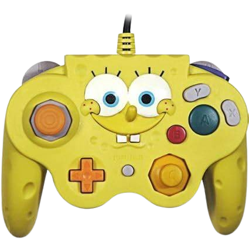

Einer meiner liebtsen aktivitäten in der Freizeit ist wahrscheinlich
das Gamen. Es fing vor ca. 12 Jahren an, als mein Onkel mir eine PS3
gekauft hat. Ich erinnerne mich kaum noch an die Zeit aber es dauerte
nicht lange bis ich eine PS4 erhielt. Mein erstes Game war Starwars
battlefront und Minecraft. Seitdem habe ich schon viele neue
Games gespielt und verschiedene Konsolen gehabt. Momentan bin ich
meistens am Phasmophobia spielen oder etwas was mir gerade Spass
macht. aber mein Lieblingsgame ist Elden Ring da ich es vom Design
sehr rausstechend finde und das Gameplay viel Spass aber auch Frust bringt.
Wie beim Sektor "Über mich" schon erwähnt ist Musik auch ein Teil
meiner Interessen. Schon seit mehreren Jahren höre ich Musik, sei
es während dem Schulweg, dem Gamen oder sonstigen Aktivitäten.
Einer meiner meistgehörtesten Artists muss Kanye oder MF Doom sein
jedoch kann ich jede Musikrichtung hören solange sie mir gefällt
und ausserdem kenne ich mich nichtmal mit den verschiedenen Musik-
richtungen aus, ich kenne nur eine einzige nämlich "City pop"
Meist höre ich meine Lieder auf Spotify und habe dort auch eine
entsprechende Playlist von allen Lieder gemacht die mir in den
letzten zwei jahren gefiellen, welche ihr beim anklicken des Bildes
selber höhren könnt!